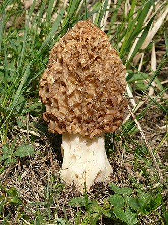
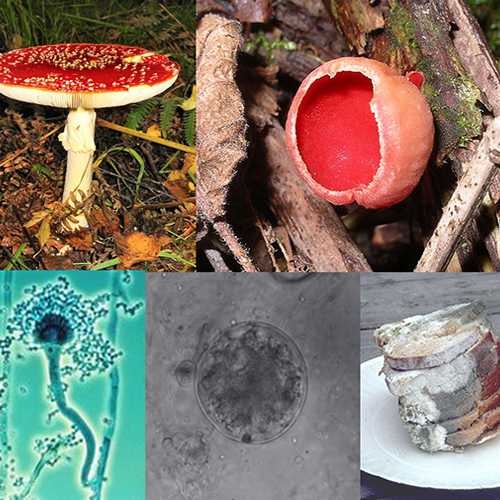

Reino Fungi
Son organismos unicelulares o multicelulares, con células de tipo Eucariota que tienen pared celular pero no están organizadas en tejidos. No llevan a cabo fotosíntesis y obtienen los nutrientes disolviendo y absorbiendo sustancias animales y vegetales en descomposición. Se reproducen por esporas.

Ejemplos: Myxomycophyta (hongos mucilaginosos) y Eumycophyta (hongos verdaderos). Generalmente aerobios. De nutrición Heterotrófica. Sin Flagelos, ninguna motilidad excepto el protoplasma fluido. Producen esporas haploides. No hay pinocitosis o fagocitosis.